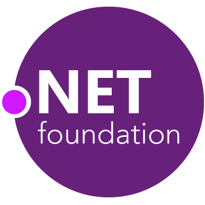

Agenda
- Simplifying Thread Security
- Unity - Game Development IDE
- Akka.Net
- .Net Core
- .Net Data Security
- What’s new in C#7
- Design Patterns
- • Litt dill dall om hvordan å bli en bedre utvikler
- C# powered cross platform build automation
- Vannballonger – ta med regntøy (Dilbert)
Simplifying Thread Security

.Net Core & ASP.Net Core
.Net Data Security
- System.Random og RNGCryptoServiceProvider
- God hashing metode bør være treg.
- Timingangrep


Akka.Net
Actor model
An “actor” is really just an analog for human participants in a system. Actors communicate with each other just like how humans do, by exchanging messages. Actors, like humans, can do work between messages.
- I en Aktor model alt er en aktor, akkurat som "alt" er objekter i OOP.
- I Akka.Net og Actor model, aktorer kommuniserer med hverandre ved å sende meldinger.
- Meldingssending er asynkront.
- Actors sender meldinger til adresser, ikke direkte til en Actor
- Actors prosesserer en melding av gangen, mailboks